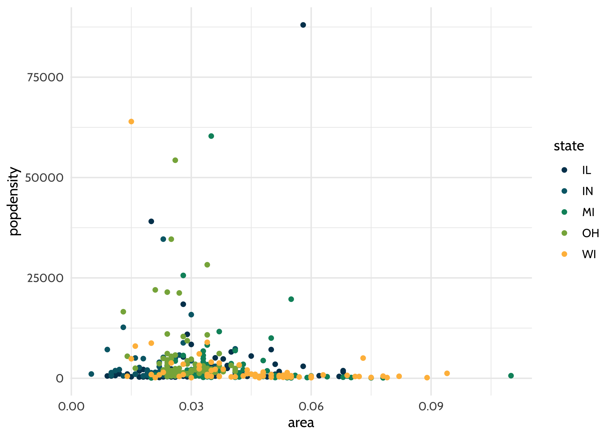

The goal of {dataedu} is to provide readers of Data Science in Education Using R with a package with useful functions, data, and references from the book.
Installation
1. Install {devtools}
First, let’s install {devtools}, an R package with many handy R tools. In your R console, type in:
install.packages("devtools")
If you already have {devtools} installed, you can move on to the next step.
If you are not sure whether you have it installed, you can run this function, which will install the newest version of {devtools} if you do not already have it.
if (!require(devtools)) { install.packages("devtools") library(devtools) }
2. Install {dataedu}
You can install the development version of {dataedu} by running this in your RStudio console:
devtools::install_github("data-edu/dataedu")
Important Notes on Installation
{dataedu} requires R 3.6 or above to be installed.
{dataedu} has other packages that it needs to be able to run. You can see the full list under “Imports” (imported when downloading the package) and “Suggests” (we think you should include these too!) in the DESCRIPTION file.
We recommend first checking to see if your packages are all up-to-date if you are running into issues with installation. If you have installed the imported/suggested packages previously and have not updated them in a while, RStudio may prompt you to update them. You can choose to (1) ignore this prompt, (2) exit the prompt and update your packages, or (3) try to update your packages through the prompt. It’s usually easier to exit and update your packages outside the prompt (one way to do this is to go to the RStudio Packages pane and click Update, then select the packages you’d like to update).
In particular, if you have installed {devtools} previously but have not updated it in a while, and you try to install the {dataedu} package, you may see a messsage such as
devtools::install_github("data-edu/dataedu") Error in loadNamespace(j <- i[[1L]], c(lib.loc, .libPaths()), versionCheck = vI[[j]]) : namespace ‘remotes’ 2.1.0 is being loaded, but >= 2.1.1 is required.Please read through the message to see what is needed (in this case, updating {remotes}). It’s always best to keep {devtools} (and all your packages) up-to-date to limit issues.
3. Call the Package
Before you can use the package, make sure to call it using library():
library(dataedu)
Package Contents
We created this package to provide our readers an opportunity to jump into R however they see fit.
- Mass installation of all the packages used in the book
- Reproducible code for the walkthroughs
- Access to the data used in each of the walkthroughs
- The dataedu theme and color palette for reuse
Mass Installation of Packages
We strived to use packages that we use in our daily work when creating the walkthroughs in the book. Because we covered a variety of subjects, that means we used a lot of packages! As described in the Foundational Skills chapter, you can install the packages individually as they suit your needs.
However, if you want to get started quickly and download all the packages at once, please use install_dataedu().
dataedu::install_dataedu()
To see the packages used in the book, run:
dataedu::dataedu_packages #> [1] "apaTables" "caret" "dummies" "ggraph" "here" #> [6] "janitor" "lme4" "lubridate" "performance" "readxl" #> [11] "rtweet" "randomNames" "sjPlot" "textdata" "tidygraph" #> [16] "tidylog" "tidyverse" "tidytext"
A special note on {tabulizer}: One of the walkthroughs uses tabulizer, created by ROpenSci to read PDFs. {tabulizer} requires the installation of RJava, which can be a tricky process. {tabulizer} is not included in install_dataedu() and we recommend reading through the notes on its Github repo if installing.
Accessing the Walkthrough Data
To get the data, run dataedu:: then the dataset as it is named in the book:
dataedu::course_data
To see all the datasets available in the package, run data(package = "dataedu").
# this is to print the results for the README # only `data(package = "dataedu")` is needed to see this list a <- data(package = "dataedu") a$result[ , 3:4] #> Item #> [1,] "all_files" #> [2,] "bchildcountandedenvironments2012" #> [3,] "bchildcountandedenvironments2013" #> [4,] "bchildcountandedenvironments2014" #> [5,] "bchildcountandedenvironments2015" #> [6,] "bchildcountandedenvironments2016" #> [7,] "bchildcountandedenvironments2017_18" #> [8,] "child_counts" #> [9,] "course_data" #> [10,] "course_minutes" #> [11,] "district_merged_df" #> [12,] "district_tidy_df" #> [13,] "frpl_pdf" #> [14,] "ma_data_init" #> [15,] "pre_survey" #> [16,] "race_pdf" #> [17,] "sci_mo_processed" #> [18,] "sci_mo_with_text" #> [19,] "tt_tweets" #> Title #> [1,] "Walkthrough 04 - Students with Disabilities Counts - Combined List" #> [2,] "Walkthrough 04 - Students with Disabilities Counts - 2012" #> [3,] "Walkthrough 04 - Students with Disabilities Counts - 2013" #> [4,] "Walkthrough 04 - Students with Disabilities Counts - 2014" #> [5,] "Walkthrough 04 - Students with Disabilities Counts - 2015" #> [6,] "Walkthrough 04 - Students with Disabilities Counts - 2016" #> [7,] "Walkthrough 04 - Students with Disabilities Counts - 2017-18" #> [8,] "Walkthrough 04 - Students with Disabilities Longitudinal Data - Combined Data Frame" #> [9,] "Walkthrough 01 - Course Data" #> [10,] "Walkthrough 01 - Course Minutes" #> [11,] "Walkthrough 03 - Merged Ethnicity and FRPL District Data" #> [12,] "Walkthrough 03 - Merged and Tidy Ethnicity and FRPL District Data" #> [13,] "Walkthrough 03 - Tabulizer Output from FRPL PDF" #> [14,] "Foundational Skills Data" #> [15,] "Walkthrough 01 - Pre-Survey" #> [16,] "Walkthrough 03 - Tabulizer Output from Race PDF" #> [17,] "Walkthrough 01 - Student Motivation (Processed)" #> [18,] "Walkthrough 01 - Student Motivation (Processed and With Text)" #> [19,] "Walkthrough 12 - Tweet Data"
Using the {dataedu} Theme and Palette
Add the theme and palette to ggplot2-based plots using theme_dataedu() and scale_*_dataedu().
library(ggplot2) library(dataedu) ggplot(midwest, aes(x = area, y = popdensity, color = state)) + geom_point() + theme_dataedu() + scale_color_dataedu()

Contact
- Please report ideas or issues on the Issues page. If possible, make your post reproducible using the {reprex} package.
- Send any pull requests on the Github repository.